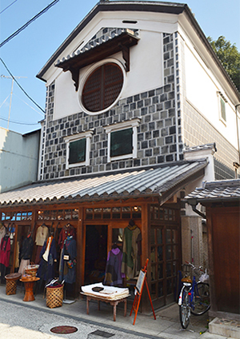

SHOP INFORMATIONYOMOGI
装いを楽しむ
平成元年創業より、オーナー自らデザインを手掛け、天然素材を中心とし、手紡ぎ手織りや手染めの生地を用いて、流行のないシンプルなものから個性的なものまでを展開している創作衣料店。体のラインが出ないというのも女性にとって嬉しい要素で、幅広い年齢層の方々に“自分だけの装い”を見つけて楽しんでいただけます。
着るを創作する
木綿の手紡ぎ手織り、手描き染め、ろうけつ染めは、色や柄の出方がそれぞれ違うため一点ものが多く、着るほどに馴染みがよくなり自然素材ならではの徐々に変化していく風合いも楽しみの一つ。綿以外にも、麻、レーヨン、シルクを扱っており、中でもシルク着物のリメイクはひときわ目を引きます。
「YOMOGI」を巡る
YOMOGIは倉敷の商店街に3店舗あり、服はもちろんですが、手づくりアクセサリーや手編みのカゴ、布小物や肌触りのよいストールといったトータルでコーディネート出来るよう豊富に商品を取り揃えております。ぜひ散策しながら3店舗をのぞいてみてください。
- YOMOGI本店
 TEN TEN
TEN TEN Kucing
Kucing
Googleマップでみる
一覧に戻る